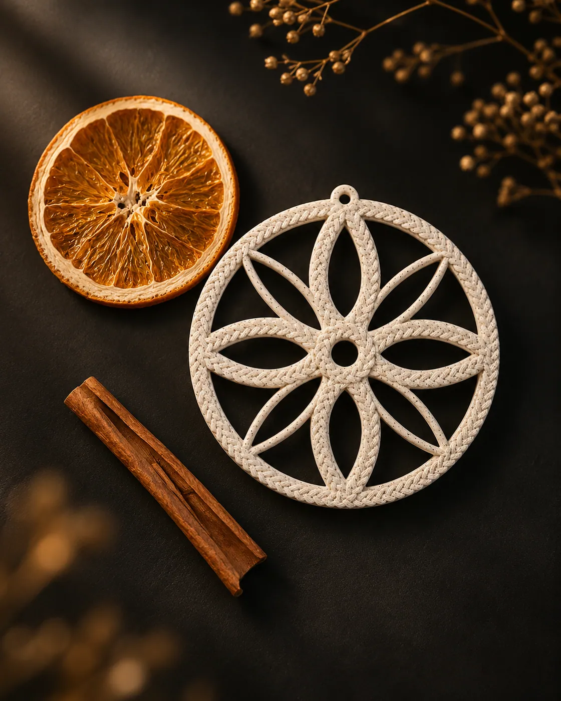
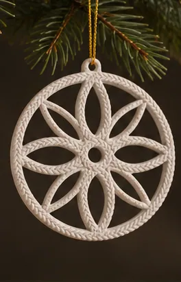

02 / KNITTED · WINTER 26
KNITTED MEDALLION
Okrąg zamyka delikatny, ażurowy splot. Złoty sznurek przechodzi bezpośrednio przez otwór medalionu.
W przygotowaniuCena w przygotowaniu
Powiadom mnie ↗- Technika
- Druk 3D
- Materiał
- Do potwierdzenia
- Kolor
- Do potwierdzenia
- Wymiary
- Do potwierdzenia
- SKU
- Do potwierdzenia
- Stan fizyczny
- Do potwierdzenia
- Cena brutto
- Do potwierdzenia
- Ilość w pilocie
- 1 sztuka
Forma ma znaczenie.
01 / Realizacja
Dostawa
Kurier na terenie Polski. Ręczna realizacja.
Koszt: Do potwierdzenia
Termin nadania: Do potwierdzenia
02 / Po zakupie
Zwroty i reklamacje
Zasady i adres zwrotów wymagają zatwierdzenia przed sprzedażą.
Procedura reklamacji w przygotowaniu.
Kontakt z pracownią03 / Identyfikacja
Bezpieczeństwo
- Producent
- Do potwierdzenia
- Adres
- Do potwierdzenia
- Do potwierdzenia
- Identyfikator
- Do potwierdzenia
- Instrukcja i ostrzeżenia
- Do potwierdzenia
04 / Pracownia
Sprzedawca
PRACOWNIA RACHUNKOWOŚCI sp. z o.o.
ul. Trawowa 19/1, 54-614 Wrocław
NIP 8943197084 · KRS 0000997294